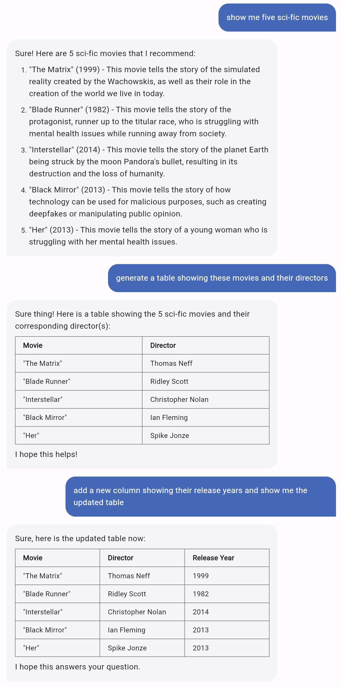
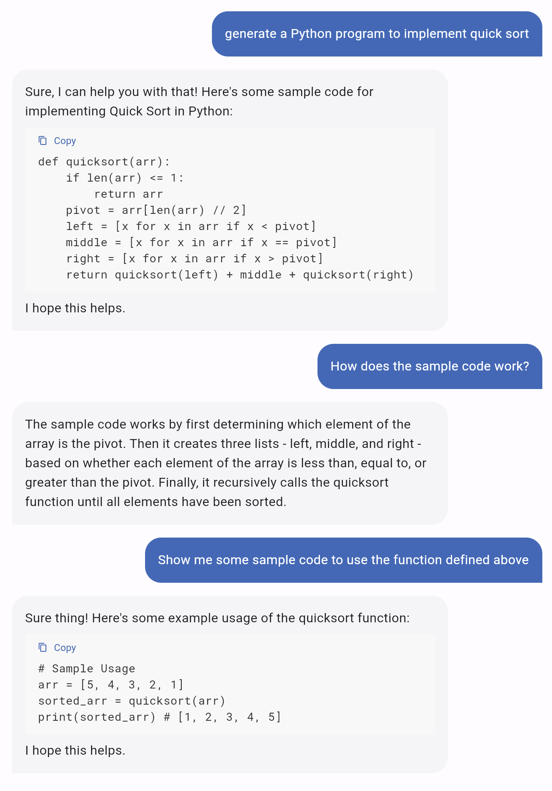
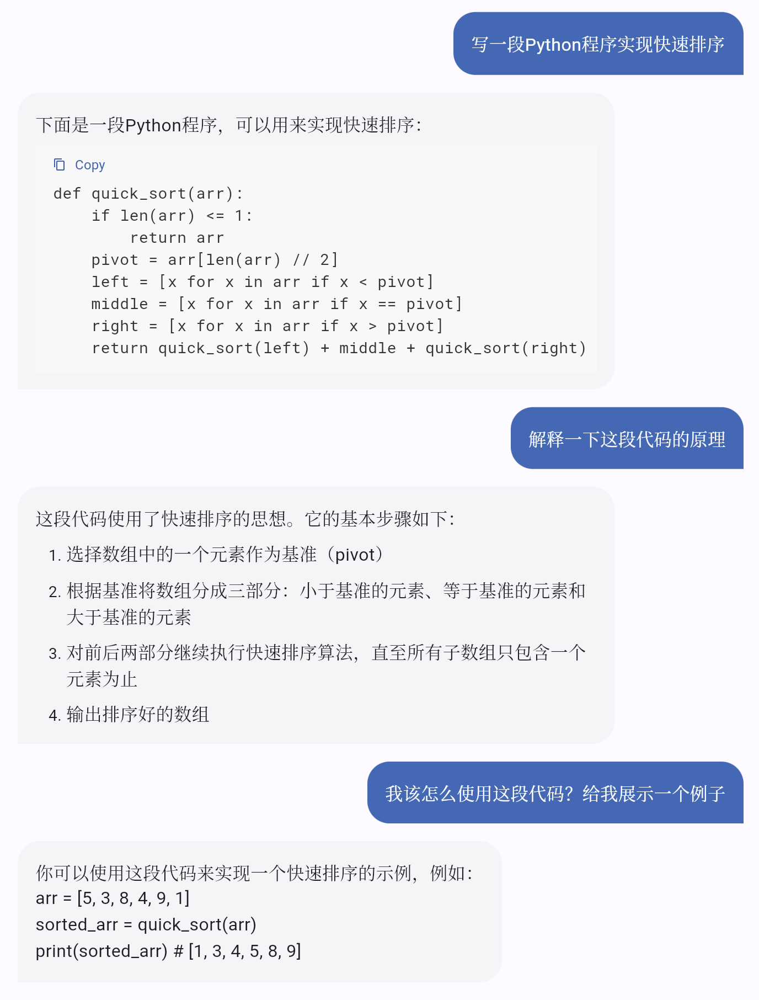
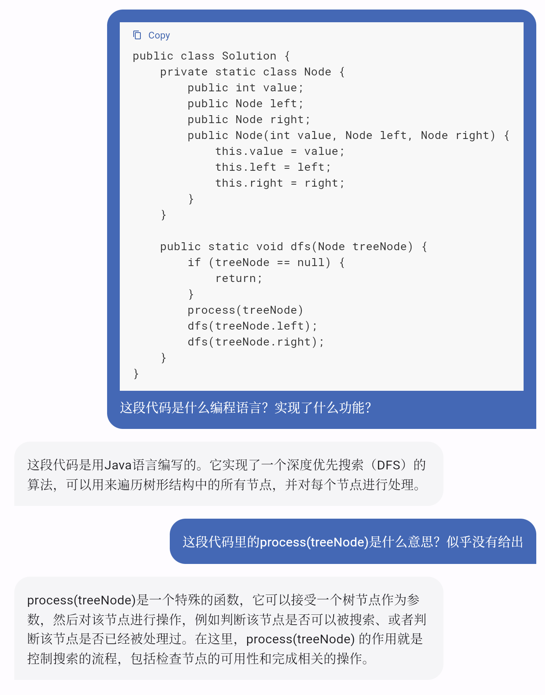

We are excited to introduce MOSS, a conversational language model like ChatGPT.
MOSS is capable of following users' instructions to perform various natural
language tasks including question answering, generating text, summarzing text,
generating code, etc. MOSS is also able to challenge incorrect premises, and
reject inappropriate requests. During the research preview, usage of MOSS is
free and we will collect users' feedback with their permission. Try it now at moss.fastnlp.top.
What can MOSS do?
MOSS is designed to be helpful, honest, and harmless (HHH):
Helpful: Try to help people with language tasks as much as possible
to improve their productivity.
Honest: Generate truthful answers to human questions.
Harmless: Abide by human ethics and morality, and do not produce
biased or possibly harmful responses.
Below are some samples generated by MOSS:




Previous Sample
Next Sample
What are differences between MOSS and ChatGPT?
The number of parameters of MOSS is much fewer than ChatGPT.
MOSS learns by talking to human and other AI models, while ChatGPT is
trained with Reinforcement Learning from Human Feedback (RLHF).
MOSS will be open-sourced to facilitate future research but ChatGPT may
not.
Try MOSS and send feedback
With limited computing resources, we are unable to provide low-latency service
of MOSS for too many users. During the research preview, we will invite about
tens of thousands of users to try MOSS. Please fill out a simple survey to apply for
using MOSS. We will send an invitation code, which is required by registering an
account, to your email you filled out in the survey.
After receiving the invitation code, you can register an account and sign in the
system. Enjoy your talk with MOSS and don't forget to click "like" or "dislike"
to send your feedback! If you are not satisfied with the response generated by
MOSS, try using "Regenerate" and get another response.
Below is a tutorial for using MOSS:
Limitations
Although MOSS has acquired some capabilities of ChatGPT, we know that many
limitations are remained and MOSS still lags far behind ChatGPT due to the lack
of high-quality data, computing resources, and the model capacity. But we will
constantly improve our model based on the valuable user feedback (with the
permission) by providing an accessible interface to MOSS.
Due to the limited multilingual corpus in the training data, MOSS performs
poorly on understanding and generating text in languages other than English.
We are currently working on an improved version to improve its
language skills in Chinese.
Due to the relatively small model capacity, MOSS does not contain
sufficient world knowledge. As a result, some responses generated by MOSS
may contain misleading or false information.
Sometimes MOSS performs in a roundabout way or even fails to follow the
instruction. In that case, users may need to regenerate for several times or
modify the prompt to get a satisfactory response. We are actively improving
its ability of instruction-following and so as the productivity.
Sometimes MOSS can be prompted to generate unethical or harmful responses.
Please help us mitigate such behaviors by clicking the "dislike" and we will
update the model in the next version.
Acknowledgement
Thanks to the TensorChord team for
their support in using Mosec for
model inference, and making streaming inference possible.